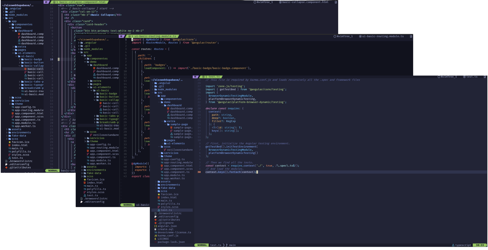

Rápida por diseño
lazy.nvim gestiona plugins con carga diferida. Menos espera, más tiempo editando.
Distribución Neovim
Config pensada para extender: lazy.nvim, Mason, LSP, Telescope, árbol de archivos, Git, formato con conform, snippets, Flash, Treesitter, Diffview, sesiones y DAP — inspirada en lo mejor de la comunidad.
-- init.lua
require("config.keymaps")
require("config.core")
require("config.lazy")
-- LSP · Mason · Telescope · DAP · UI
vim.opt.titlestring = "Ultra Nvim — %t"
Lo esencial ya resuelto; tú añades opiniones. Misma filosofía que las distros que admiras: defaults sensatos, código legible, extensiones sin drama.
lazy.nvim gestiona plugins con carga diferida. Menos espera, más tiempo editando.
Servidores y herramientas alineados con Mason; adjuntos LSP y utilidades en un solo lugar.
Tema, barra de estado, árbol y buscadores integrados para una experiencia coherente de punta a punta.
Flujo Git cómodo y Diffview cuando necesitas ver el bosque y los árboles.
Telescope, Flash, surround, textobjects Treesitter, formato con conform y snippets listos.
DAP para depurar donde código y terminal conviven; AutoSession para retomar el contexto.
Desde JS/TS hasta Scala, pasando por Python, Go, Rust, Java, Ruby, Swift y más — la base está preparada para crecer contigo.
Requisitos recomendados: Git y herramientas de compilación en Unix
(Treesitter, LuaSnip). Ajusta vim.g.ultra_tab_bar a
"tabs" o "buffers" según prefieras pestañas
:tab o bufferline.
Copia el starter en tu configuración de Neovim. Haz backup de
~/.config/nvim si ya tienes una config.
git clone https://github.com/DarkSevenX/ultra-nvim-starter.git ~/.config/nvim
cd ~/.config/nvim && nvimln -sfn "$(pwd)/ultra-nvim-starter" ~/.config/nvim
nvim